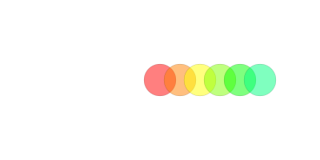
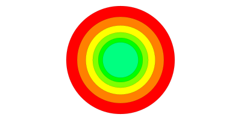
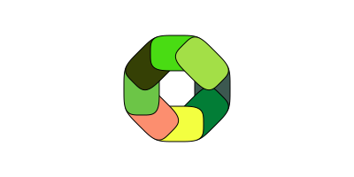

Transforms and matrices
For basic transformations of the drawing space, use scale(sx, sy), rotate(a), and translate(tx, ty). You can use origin() to return to the document's original state, with the axes in the center.
translate() shifts the current 0/0 point by the specified amounts in x and y. It's relative and cumulative, rather than absolute:
origin()
for i in range(0, 30, 6)
sethue(HSV(i, 1, 1)) # from Colors
setopacity(0.5)
circle(0, 0, 20, :fillpreserve)
setcolor("black")
stroke()
translate(25, 0)
endINFO: drawing '../figures/translate.png' (400 w x 200 h) created in /Users/pete/.julia/v0.5/Luxor/docs/build

scale() scales the current workspace by the specified amounts in x and y. Again, it's relative to the current scale, not to the document's original.
origin()
for i in range(0, 30, 6)
sethue(HSV(i, 1, 1)) # from Colors
circle(0, 0, 90, :fillpreserve)
setcolor("black")
stroke()
scale(0.8, 0.8)
endINFO: drawing '../figures/scale.png' (400 w x 200 h) created in /Users/pete/.julia/v0.5/Luxor/docs/build

rotate() rotates the current workspace by the specifed amount about the current 0/0 point. It's relative to the previous rotation, not to the document's original.
origin()
for i in 1:8
randomhue()
squircle(Point(40, 0), 20, 30, :fillpreserve)
sethue("black")
stroke()
rotate(pi/4)
endINFO: drawing '../figures/rotate.png' (400 w x 200 h) created in /Users/pete/.julia/v0.5/Luxor/docs/build

Base.scale — Function.scale(x, y)Scale workspace by x and y.
Example:
scale(0.2, 0.3)Luxor.rotate — Function.rotate(a)Rotate workspace by a radians clockwise (from positive x-axis to positive y-axis).
Luxor.translate — Function.translate(x, y)
translate(point)Translate the workspace by x and y or by moving the origin to pt.
The current matrix is a six element array, perhaps like this:
[1, 0, 0, 1, 0, 0]transform(a) transforms the current workspace by 'multiplying' the current matrix with matrix a. For example, transform([1, 0, xskew, 1, 50, 0]) skews the current matrix by xskew radians and moves it 50 in x and 0 in y.
function boxtext(p, t)
sethue("grey30")
box(p, 30, 50, :fill)
sethue("white")
textcentred(t, p)
end
for i in 0:5
xskew = tand(i * 5.0)
transform([1, 0, xskew, 1, 50, 0])
boxtext(O, string(round(rad2deg(xskew), 1), "°"))
endINFO: drawing '../figures/transform.png' (450 w x 100 h) created in /Users/pete/.julia/v0.5/Luxor/docs/build

getmatrix() gets the current matrix, setmatrix(a) sets the matrix to array a.
Luxor.getmatrix — Function.getmatrix()Get the current Cairo matrix. Returns an array of six float64 numbers:
xx component of the affine transformation
yx component of the affine transformation
xy component of the affine transformation
yy component of the affine transformation
x0 translation component of the affine transformation
y0 translation component of the affine transformation
Some basic matrix transforms:
translate
transform([1, 0, 0, 1, dx, dy])=> shift by
dx,dyscale
=> scale by
fx,fyscale around O: [W 0 0 H 0 0]
rotate
transform([cos(a), -sin(a), sin(a), cos(a), 0, 0])=> rotate to
aradiansrotate around O: [c -s s c 0 0]
shear in x: [1 0 A 1 0 0]
x-skew
transform([1, 0, tan(a), 1, 0, 0])=> xskew by
ay-skew
transform([1, tan(a), 0, 1, 0, 0])=> yskew by
aflip
transform([fx, 0, 0, fy, centerx * (1 - fx), centery * (fy-1)])=> flip with center at
centerx/centeryshear in y: [1 B 0 1 0 0]
reflect in O: [-1 0 0 -1 0 0]
reflect in xaxis: [1 0 0 -1 0 0]
reflect in yaxis: [-1 0 0 1 0 0]
When a drawing is first created, the matrix looks like this:
getmatrix() = [1.0, 0.0, 0.0, 1.0, 0.0, 0.0]When the origin is moved to 400/400, it looks like this:
getmatrix() = [1.0, 0.0, 0.0, 1.0, 400.0, 400.0]To reset the matrix to the original:
setmatrix([1.0, 0.0, 0.0, 1.0, 0.0, 0.0])Luxor.setmatrix — Function.setmatrix(m::Array)Change the current Cairo matrix to matrix m. Use getmatrix() to get the current matrix.
Luxor.transform — Function.transform(a::Array)Modify the current matrix by multiplying it by matrix a.
For example, to skew the current state by 45 degrees in x and move by 20 in y direction:
transform([1, 0, tand(45), 1, 0, 20])Use getmatrix() to get the current matrix.
Luxor.crossproduct — Function.crossproduct(p1::Point, p2::Point)This is the perp dot product, really, not the crossproduct. dot(p1, perpendicular(p2))
Luxor.blendmatrix — Function.blendmatrix(b::Blend, m)Set the matrix of a blend.
To apply a sequence of matrix transforms to a blend:
A = [1 0 0 1 0 0]
Aj = cairotojuliamatrix(A)
Sj = scaling_matrix(2, .2) * Aj
Tj = translation_matrix(10, 0) * Sj
A1 = juliatocairomatrix(Tj)
blendmatrix(b, As)Luxor.rotation_matrix — Function.rotation_matrix(a)Return a 3 by 3 Julia matrix that will apply a rotation through a radians.
Luxor.scaling_matrix — Function.scaling_matrix(sx, sy)Return a 3 by 3 Julia matrix that will apply a scaling by sx and sy.
Luxor.translation_matrix — Function.translation_matrix(x, y)Return a 3 by 3 Julia matrix that will apply a translation in x and y.
Luxor.cairotojuliamatrix — Function.cairotojuliamatrix(c)Return a 3 by 3 Julia matrix that's the equivalent of the six-element Cairo matrix in c.
Luxor.juliatocairomatrix — Function.juliatocairomatrix(c)Return a six-element Cairo matrix 3 that's the equivalent of the 3 by 3 Julia matrix in c.